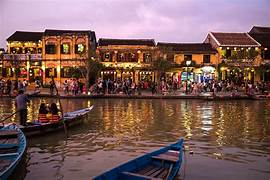

Vietnam is a country of breathtaking beauty, from the limestone islands of Ha Long Bay to the rolling rice terraces of Sapa. Tourists from around the world come to explore the country’s rich landscapes, diverse ecosystems, and vibrant cities. Some of the must-visit destinations include Hanoi, the capital city, Ho Chi Minh City (formerly Saigon), and the ancient town of Hoi An.
In addition to natural wonders, Vietnam is home to many historical and cultural sites, such as the My Son Sanctuary and the Imperial City of Hue. Whether you are seeking adventure or relaxation, Vietnam has something to offer.
